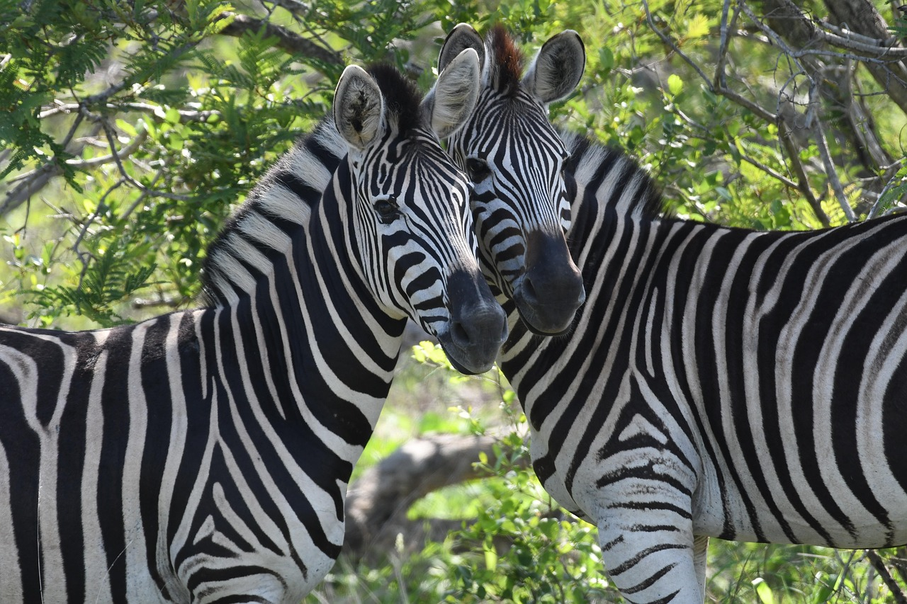
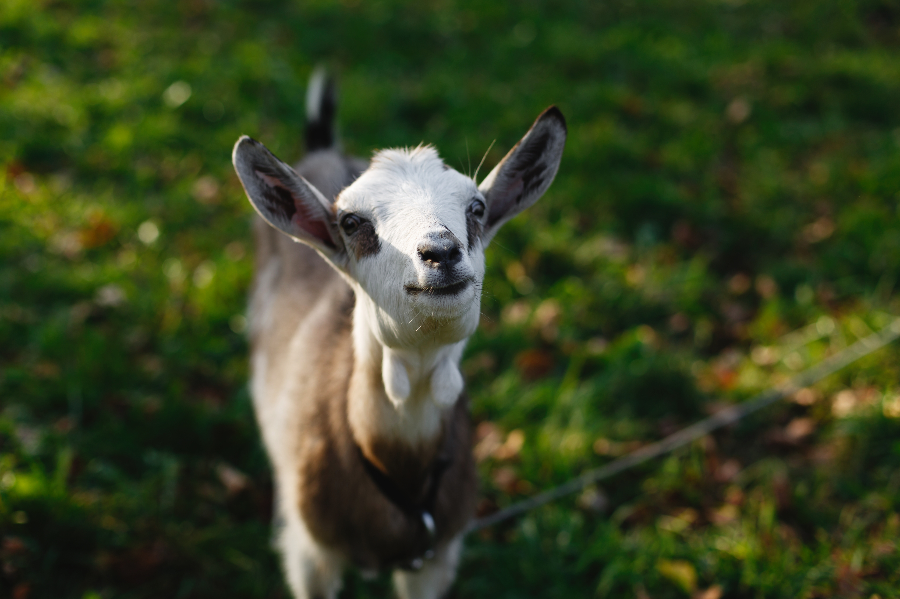

Zebra

Zebra to afrykański koń o charakterystycznym czarno-białym pasiastym umaszczeniu, należący do rodziny koniowatych, żyjący w stadach. Zwierzę to posiada dużą głowę, mocną szyję i stosunkowo krótkie nogi, a jego skóra pod pasami jest czarna. W zależności od gatunku, zebry osiągają różne rozmiary, są roślinożerne i potrafią biegać z dużą prędkością.
Koza

Koza to udomowiony ssak kopytny, blisko spokrewniony z owcami, żywiony głównie trawą i krzewami.